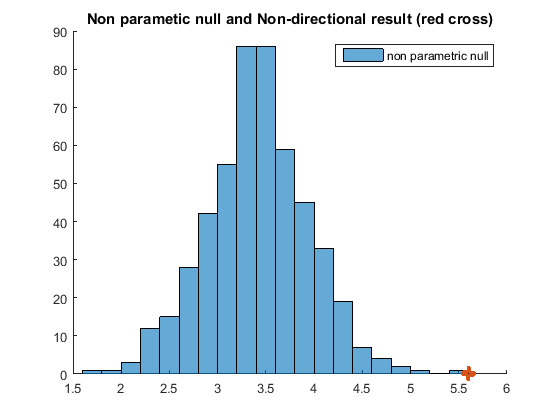
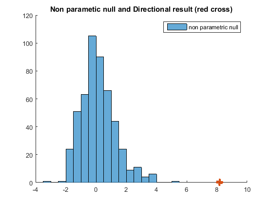

Simple Example
This example creates a toy data set to better understand How T2013 and T2008 work. For details see here.
Contents
params.numsubs = 20; % number of subjects params.numtrials = 40; % number of trials params.sphrsize = 27; % sphere size params.effectsize = 0.1; % effect size params.signalper = 0.2; % percent voxels with signal params.numshufs = 5e2; % num of non paramteric shuffels params.mu = 0; % for simulating data params.sigma = 0.2; % for simulating data
Create Simulated Data
% simulate one "searchlight" or ROI per subject, with dimensions: % (Trials x Voxels x Subjects); labels = [ones(params.numtrials/2,1).*1'; ones(params.numtrials/2,1).*2']; for i = 1:params.numsubs; % simulate data for each subject rng(i); data(:,:,i) = normrnd(params.mu,params.sigma,params.numtrials,params.sphrsize); % add signal idxsignal = randperm(params.sphrsize,floor(params.signalper*params.sphrsize)); data(labels==1,idxsignal,i) = data(labels==1,idxsignal,i) + params.effectsize; end fprintf('simulated data has dimensions:\n') fprintf('Trials = %d, Voxels = %d, Subjects = %d\n',... size(data,1),size(data,2),size(data,3));
simulated data has dimensions: Trials = 40, Voxels = 27, Subjects = 20
Compute Non-directional analysis
% A non-directional analysis assumes each subject can have a different pattern % of activity. % first level: % loop on each subject to compute multi-t 2013 for i = 1:params.numsubs % loops on subs for j = 1:params.numshufs + 1 if j == 1 % don't shuffle labels labelsuse = labels; else % shuffle labels labelsuse = labels(randperm(length(labels))); end x = data(labelsuse==1,:,i); y = data(labelsuse==2,:,i); ansMat(i,j) = calcTstatMuniMengTwoGroup(x,y); end end % second level % take median from each subject and calc p-value: medianAnsMat = median(ansMat,1); compMatrix = repmat(medianAnsMat(:,1),1,params.numshufs+1); Pval = mean(compMatrix <= medianAnsMat); fprintf('Pval is %.3f\n',Pval); % plot results figure; hold on; histogram(medianAnsMat(2:end)); legend('non parametric null'); scatter(medianAnsMat(1),0, 'LineWidth',5); title('Non parametic null and Non-directional result (red cross)');
Pval is 0.002
Compute Directional analysis
% A directional analysis assumes each subject has a similar pattern of % activity. % first level: % simple average the data within each subject: data_averaged = mean(data,3); % second level % compute directional T-2008 on each subject: for j = 1:params.numshufs + 1 if j == 1 % don't shuffle labels labelsuse = labels; else % shuffle labels labelsuse = labels(randperm(length(labels))); end x = data_averaged(labelsuse==1,:); y = data_averaged(labelsuse==2,:); delta = x-y; ansMatDirectional(j) = calcTstatDirectional(delta); end % calc p-value: compMatrix = repmat(ansMatDirectional(:,1),1,params.numshufs+1); Pval = mean(compMatrix <= ansMatDirectional); fprintf('Pval is %.3f\n',Pval); % plot results figure; hold on; histogram(ansMatDirectional(2:end)); legend('non parametric null'); scatter(ansMatDirectional(1),0, 'LineWidth',5); title('Non parametic null and Directional result (red cross)');
Pval is 0.002
Compute FuA
FuA computes the degree to which subjects share a similar pattern of activity.
x = data_averaged(labels==1,:);
y = data_averaged(labels==2,:);
delta = x-y;
FuAval = calcFuA(delta);
fprintf('FuA value is %.3f\n',FuAval);
FuA value is 0.196